웹디자인
상품페이지
기타디자인
사진촬영
사진보정
영상편집
video editing
뼈와 살을 갈아서 제작한 영상이랍니다.
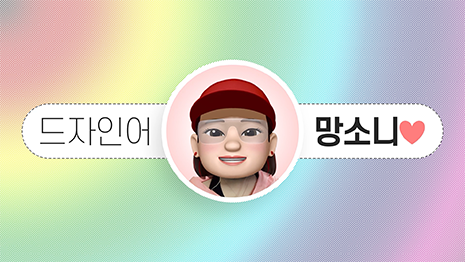
드자인어 망소니 인트로
영상의 시작을 알리는 상큼 발랄한 인트로
[ 프리미어 ] 인트로 영상 제작
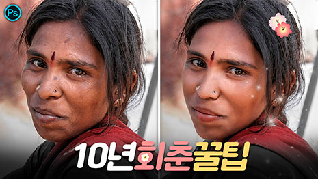
#포토샵 사진 보정ㅣ자연스러운 보정 꿀팁
80%는 먹고 들어가는 기술ㅣ사진을 살리는 리터치ㅣ자연스러운 보정 성형ㅣ디지털 포샤기
[ 포토샵 무적권 따라하기 ] 사진 리터치
#포토샵 그라데이션 투명 텍스트 만들기
그라디언트 텍스트 일러스트에서만 가능?ㅣ아니!! 포토샵에서도 충분히 가능! 만들면 언제든 수정 가능
[ 포토샵 무적권 따라하기 ] 포토샵 소스 제작
#포토샵 클리핑 마스크ㅣ부부의 세계 타이틀 만들기
합성 디자인ㅣ텍스트 꾸미기ㅣ강좌 따라하기
[ 포토샵 무적권 따라하기 ] 클리핑 마스크 기본 개념
#포토샵 레이어 마스크
이런 작업? 너두 할 수 있어!ㅣ예제로 이해하는 개념 정리
[ 포토샵 무적권 따라하기 ] 레이어 마스크 기본 개념
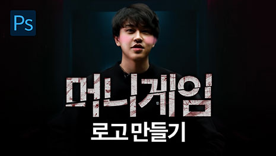
#포토샵 머니게임 타이틀 로고 만들기
프로그램 로고를 제작해보자ㅣ포토샵 소스 [ 텍스트 수정 가능 ]
[ 포토샵 무적권 따라하기 ] 머니게임 타이틀 제작
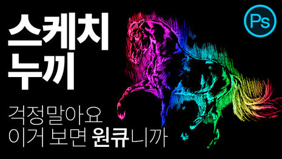
#포토샵 스케치 라인 누끼 따는 법
이게 바로 채널 추출ㅣ알파 채널로 쉽고 빠르게 그림 누끼 따기
[ 포토샵 무적권 따라하기 ] 라인 추출
#포토샵 스마트 오브젝트 개념부터 - 목업 파일 제작까지
스마트 오브젝트 총 정리ㅣ고급 개체ㅣMock-Up 소스 만들기
[ 포토샵 무적권 따라하기 ] Mock-up의 모든 것
#포토샵 사실적인 Mock-Up 만들기
이것만 알면 목업 디자인 뚝딱! [스마트 오브젝트부터 목업까지 3탄]
[ 포토샵 무적권 따라하기 ] 사실적인 목업 제작
#포토샵 Mock-Up 파일 파헤치기
스마트 오므젝트로 만드는 친절한 목업 사용법 [스마트 오브젝트부터 목업까지 2탄]
[ 포토샵 무적권 따라하기 ] 목업 파헤치기
#포토샵 채널 믹서 색교체
컬러 어디까지 바꿔봤니?ㅣ색변환 1분도 안 걸림 [채널믹서 기본 강좌 4탄]
[ 포토샵 무적권 따라하기 ] 색교체 1분 컷
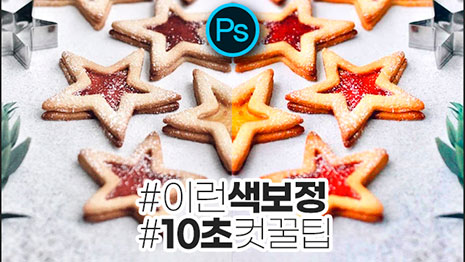
#포토샵 채널 믹서 색보정
10초 색상 보정 꿀팁ㅣ이렇게 쉽다고? [채널믹서 기본 강좌 3탄]
[ 포토샵 무적권 따라하기 ] 색보정 10초 컷
#포토샵 카메라 로우 필터 완전 정복
[ ALL IN ONE ] 알차게 눌러 담았지 뭐야 데헷 :)
[ 포토샵 무적권 따라하기 ] 카메라로우 올인원
#포토샵 카메라 로우ㅣACR
[ 사이드 패널 6탄. 레드 아이 리무버 ] 적목 현상 교정ㅣ안쓰면 후회할 사진 보정 결정판
[ 포토샵 무적권 따라하기 ] 카메라 로우 필터 [ 사이드 패널 - 레드 아이 리무버 ]
#포토샵 카메라 로우ㅣACR
[ 사이드 패널 5탄. 레디얼 필터 ] 원형 부분 보정 필터ㅣ안쓰면 후회할 사진 보정 결정판
[ 포토샵 무적권 따라하기 ] 카메라 로우 필터 [ 사이드 패널 - 레디얼 필터 ]
#포토샵 카메라 로우ㅣACR
[ 사이드 패널 4탄. 그레쥬에이티드 필터 ] 그라디언트 부분 보정 필터ㅣ안쓰면 후회할 사진 보정 결정판
[ 포토샵 무적권 따라하기 ] 카메라 로우 필터 [ 사이드 패널 - 그레쥬에이티드 필터 ]
#포토샵 카메라 로우ㅣACR
[ 사이드 패널 3탄. 어저스트먼트 브러시 ] 브러시를 사용한 부분 보정ㅣ안쓰면 후회할 사진 보정 결정판
[ 포토샵 무적권 따라하기 ] 카메라 로우 필터 [ 사이드 패널 - 어저스트먼트 브러시 ]
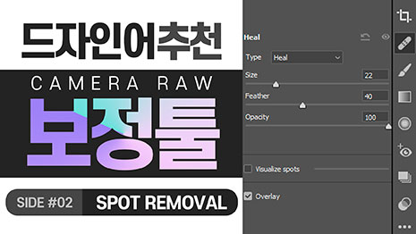
#포토샵 카메라 로우ㅣACR
[사이드 패널 2탄. 스팟 리무버 ] 손쉽게 지우고 복제하기ㅣ안쓰면 후회할 사진 보정 결정판
[ 포토샵 무적권 따라하기 ] 카메라 로우 필터 [ 사이드 패널 - 스팟 리무버 ]
#포토샵 카메라 로우ㅣACR
[ 사이드 패널 1탄. 크롭 ] 너무 쉬운 이미지 자르기 및 반전ㅣ안쓰면 후회할 사진 보정 결정판
[ 포토샵 무적권 따라하기 ] 카메라 로우 필터 [ 사이드 패널 - 크롭 ]
#포토샵 카메라 로우ㅣACR
[ 8탄. 이펙츠 패널 ] 디지털 사진을 필름 사진으로 바꾸기ㅣ너무 쉬운 빈티지 효과ㅣ안쓰면 후회할 사진 보정 결정판
[ 포토샵 무적권 따라하기 ] 카메라 로우 필터 [ 이펙츠 패널 ]
#포토샵 카메라 로우ㅣACR
[ 7탄. 지오메트리 패널 ] 자유로운 대칭 조절ㅣ풍경사진 건축물사진 보정에 적합ㅣ안쓰면 후회할 보정 결정판
[ 포토샵 무적권 따라하기 ] 카메라 로우 필터 [ 지오메트리 패널 ]
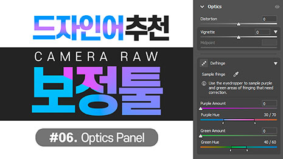
#포토샵 카메라 로우ㅣACR
[ 6탄. 옵틱스 패널 ] 안쓰면 후회할 보정 결정판ㅣ사진을 선명하게 만드는 숨은 기능
[ 포토샵 무적권 따라하기 ] 카메라 로우 필터 [ 옵틱스 패널 ]
#포토샵 카메라 로우ㅣACR
[ 5탄. 컬러 그레이딩 패널 ] 안쓰면 후회할 색보정 결정판ㅣ명암으로 추가하는 컬러 그레이딩
[ 포토샵 무적권 따라하기 ] 카메라 로우 필터 [ 컬러 그레이딩 패널 ]
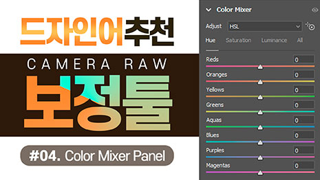
#포토샵 카메라 로우ㅣACR
[ 4탄. 컬러 믹서 패널 ] 안쓰면 후회할 색보정 결정판ㅣ컬러 그레이딩ㅣ자유로운 색 보정 드래그 한 번으로 끝
[ 포토샵 무적권 따라하기 ] 카메라 로우 필터 [ 디테일 패널 ]
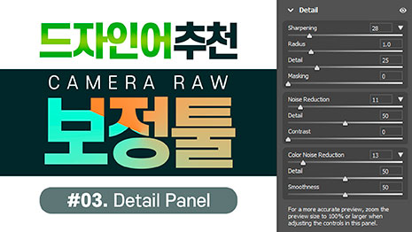
#포토샵 카메라 로우ㅣACR
[ 3탄. 디테일 패널 ] 안쓰면 후회할 색보정 결정판ㅣ컬러 그레이딩ㅣ선명도와 질감 조절
[ 포토샵 무적권 따라하기 ] 카메라 로우 필터 [ 디테일 패널 ]
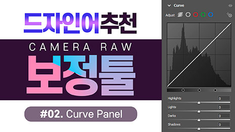
#포토샵 카메라 로우ㅣACR
[ 2탄. 커브 패널 ] 안쓰면 후회할 색보정 결정판ㅣ컬러 그레이딩 ㅣ부드러운 명암 조절과 색공간 추가
[ 포토샵 무적권 따라하기 ] 카메라 로우 필터 [ 커브 패널 ]
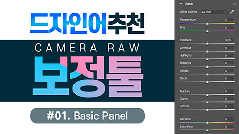
#포토샵 카메라 로우ㅣACR
[ 1탄. 베이직 패널 ] 안쓰면 후회할 색보정 결정판ㅣ컬러 그레이딩ㅣ화이트 밸런스와 디테일한 밝기 조절
[ 포토샵 무적권 따라하기 ] 카메라 로우 필터 [ 베이직 패널 ]